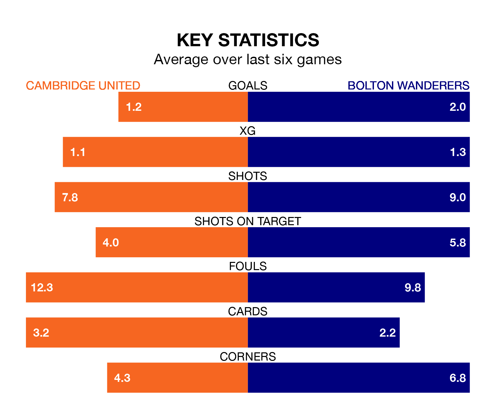

Bolton Wanderers are strong favourites to take all three points despite Cambridge United's home advantage in Tuesday's late match at the Abbey Stadium.
*Betting Company* are offering odds of 1.91 on Bolton sealing the win, with the visitors sitting third in EFL League One table.
Cambridge, who are 17th in the league and 25 points behind Bolton, are priced at 3.75 to win. A draw is set at 3.4.
With 57 goals in 31 games so far this season, Bolton are scoring more than average in the league with 1.8 goals per game. And they are conceding fewer than average, letting in 32 goals at a rate of 1.0 per game.
Cambridge, meanwhile, are below average scorers, with 1.0 goal per game, compared to a league average of 1.3. They have conceded 1.2 goals per game.
With Nathan Baxter between the sticks, Wanderers can rely on one of the league's safest pair of hands. He has kept 12 clean sheets in his 28 appearances this season, and only one other 'keeper – Portsmouth's Will Norris – has been able to prevent the opposition scoring on more occasions in EFL League One.
In United's net, Jack Stevens has 10 clean sheets in 26 games. He has conceded a goal every 78 minutes, 30% more often than the 101 minutes between goals for Baxter.
In the last 10 years, Cambridge and Bolton have played each other on six occasions. Cambridge won one of them, Bolton two, and they drew three times.
On average, Cambridge scored 0.7 goals and Bolton 1.0 in those matches.
Their last meeting was on April 10, when they played out a 1-1 draw.
The hosts are in mixed form in EFL League One, with two wins and two draws from their last six games.
With three wins and three draws over that period, the away team's form is better – they have taken 12 points from 18, compared to Cambridge's eight.
Cambridge's last match was on Saturday, a 4-0 win against Carlisle United, with Elias Kachunga, Ryan Bennett, Samuel Lavelle (own goal) and Sullay Kaikai getting the goals for Cambridge.
Bolton drew 3-3 with Charlton Athletic last time out, also on Saturday, with Jón Daði Böðvarsson, Paris Maghoma and Victor Adeboyejo on the scoresheet.
Tuesday's match will be refereed by David Rock, who has taken charge of 10 EFL League One games so far this season, issuing three red cards and booking 43 players. He has awarded two penalties.
The last Cambridge game Rock refereed was a 3-0 home loss to Lincoln City on November 28. His last Bolton match was their 3-0 win away at Cheltenham Town on August 12.
Updated: 12:18 (UTC), 19/02/24